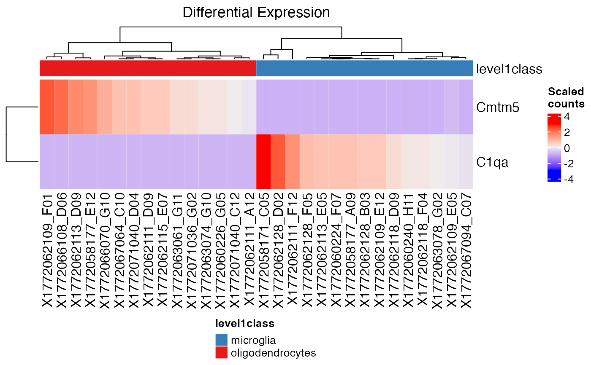

visPlot
visPlot.RdGiven a plotting method with condition and gene list, return the respective visualization plot(s).
visPlot(inSCE, useAssay, method, condition, glist, facetWrap = TRUE, scaleHMap = TRUE, convertFactor = FALSE)
Arguments
| inSCE | Input SCtkExperiment object. Required |
|---|---|
| useAssay | The assay to use in the visualization plot. Required |
| method | Visualization method. Available options are boxplot, scatterplot, or heatmap. Required |
| condition | colData annotation of the experiment. Required |
| glist | selected genes for visualization. Maximum 25 genes. Required |
| facetWrap | facet wrap according to genes for boxplot, scatterplot and barplot. Default is FALSE. Optional |
| scaleHMap | scale heatmap expression values. Default is TRUE. Optional |
| convertFactor | If the condition is not a factor, convert it to a factor before plotting. The default is FALSE |
Value
A visualization plot
Examples
visPlot(mouseBrainSubsetSCE, "logcounts", "boxplot", "level1class", "C1qa")visPlot(mouseBrainSubsetSCE, "counts", "scatterplot", "age", "Cmtm5")